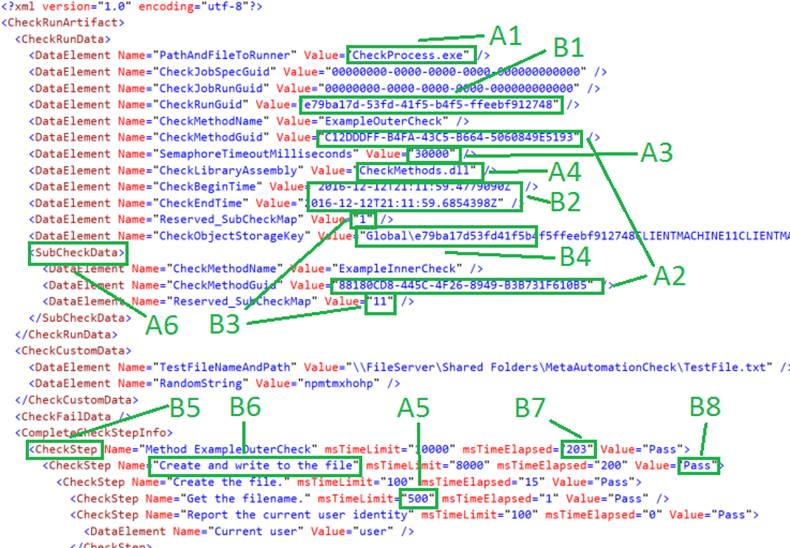

MetaAutomation Sample2
Installation and Tutorials
Contents
Installing the Integrated Development Environment (IDE)
First Run of MetaAutomation Sample 2
Selecting Other Checks in the Sample
Enabling the Different Example Checks in the Map File
Iterative Runs for Test and Debugging
The XML and the C# Source Code
How To Use The XML Artifacts to Drive The Checks and Read Results
A. Entries in the XML artifact that drive the check
B. Entries that are determined by the check code and the engine during a check run
The MetaAutomation Sample 2 is a Visual Studio solution developed with Microsoft Visual Studio Community 2017. There are 8 projects in the solution, and several folders of important files.
Microsoft Visual Studio Community 2017 is free to download, use and install from https://www.visualstudio.com/downloads/ .
This document concerns setup and run of the sample as downloaded, including the 6 example checks included in the sample.
Both MetaAutomation Sample 2 and MetaAutomation Sample 3 demonstrate checks with
· self-documenting, hierarchical check steps that show pass, fail, or blocked
· distribution across processes with synchronization
· pure, compact, descriptive check artifacts in a schema-defined grammar of XML
MetaAutomation Sample 3 runs checks across processes and across machines, which is useful for running one or more checks across any number of tiers, e.g. for doing quality automation on the Internet of Things with automation.
For more information and diagrams on how this system works, to customize the checks or adapt the infrastructure, and more on how this implements the Atomic Check pattern and works in the bigger setting of the MetaAutomation pattern language, please see the site http://MetaAutomation.net and the book on MetaAutomation (3rd Edition or later).
If you do not have a version of Visual Studio 2017, install the latest free version:
1. Browse to this page https://www.visualstudio.com/downloads/
2. Select the download for “Visual Studio Community 2017” or a newer version
3. Verify that it is published by Microsoft, and Select “Run”
4. Depending on choices in the installer, choose the “Typical” installation, or select these components:
a. .Net core cross-platform
b. Visual Studio extension development
c. .Net desktop development
5. Proceed with the installation
The MetaAutomation Sample 2 is available as a zipfile download from GitHub, but the easiest way to find it is here:
Click the “Samples” tab, follow the link for MetaAutomation Sample 2 and choose your download type. Place the solution in a new folder in your workspace.
1. Open the solution in Visual Studio 2017
2. Check that the active solution configuration is “Debug”
3. Build the entire solution of 8 projects. NOTE due to the fact that the assembly that implements the checks is loaded at runtime, this step is not optional and may have to be repeated to ensure that CheckProcess.exe is correctly built.
4. Verify that the startup project is “CheckLauncher”
5. F5 to run the first example check of the sample, out of six checks.
CheckLauncher is a command-line application that will show status information on the check run. This is expected to succeed; if not, there is a configuration issue. Note that Example 2 of Sample 2 is expected to fail the check roughly 80% of the time, but CheckLauncher is still expected to succeed in every case. As downloaded, though, Example 2 is disabled in the file CheckMap.xml; only Example 3 is enabled.
See the Troubleshooting section below for some ideas of how to resolve issues.
For the results of the check, see the file CheckMap.xml in the Artifacts directory in the file location where you are running the MetaAutomation Sample 2 solution. This file now points to the new artifact file in the file system. Open it in your favorite text / XML editor, and check it out.
This file will be used to run the same check, for the next run of that check.
The other checks listed in the “Check” elements in CheckMap.xml file work the same way.
In Visual Studio, see the file directory “Artifacts” for the file “CheckMap.xml.” This file is the map that CheckLauncher uses to find the artifact files that are needed to tell the system how to run the check. Note that if a check runs to completion, a new artifact file for the check is created, and the map is updated to point to that file.
The artifact files called “CheckRunArtifact_<GUID>.xml” do double-duty in this system; each file is a result of a check run, and is needed to run the check next time. This is how the check knows what check steps are expected as part of the check, and also how the check steps can get updated if necessary.
The map file determines which of the example checks are run. Each Check element in the XML corresponds to an artifact XML file which includes
· The results of the last check run
· Check steps information, for use with the next run of the same check
· Some information needed to run the check
In the file CheckMap.xml, as downloaded, only one Check element is not commented out in the distributed version of the project:
<Check>
<DataElement Name="DirectoryName" Value="Local\TwoTierFileSystemCheck" />
<DataElement Name="CurrentCheckRunArtifact" Value="CheckRunArtifact_Original.xml" />
<DataElement Name="Comment" Value="Simple example of a two-tier check, in two different processes" />
</Check>
This instructs the engine to load the file called CheckRunArtifact_Original.xml in the relative directory Local\TwoTierFileSystemCheck, and run a check starting with that CheckRunArtifact XML file. On successful completion of the check run (whether the check itself results in a PASS or a FAIL) the XML element here will be updated to point to the new artifact file.
Each un-commented “Check” element in the map file is enabled and will run a different example check. All the enabled example checks will run in parallel in different processes on the machine on launch of the CheckLauncher executable.
This example check is disabled by default. To enable it, un-comment the “Check” element in XML in the map file that represents this check.
So, the beginning of the CheckMap.xml file might look like this when you first look at it:
<?xml version="1.0" encoding="utf-8"?>
<Checks>
<!--Check>
<DataElement Name="DirectoryName" Value="Example_1_SimpleOneTierCheck" />
<DataElement Name="CurrentCheckRunArtifact" Value="CheckRunArtifact_Original.xml" />
<DataElement Name="Comment" Value="Sample 1: Simple one-tier check" />
</Check-->
<!--Check>
<DataElement Name="DirectoryName" Value="Example_2_CheckOfWebPageBuiltToFailRandomly" />
<DataElement Name="CurrentCheckRunArtifact" Value="CheckRunArtifact_Original.xml" />
Enabling check 1 looks like this:
<?xml version="1.0" encoding="utf-8"?>
<Checks>
<Check>
<DataElement Name="DirectoryName" Value="Example_1_SimpleOneTierCheck" />
<DataElement Name="CurrentCheckRunArtifact" Value="CheckRunArtifact_Original.xml" />
<DataElement Name="Comment" Value="Sample 1: Simple one-tier check" />
</Check>
<!--Check>
<DataElement Name="DirectoryName" Value="Example_2_CheckOfWebPageBuiltToFailRandomly" />
<DataElement Name="CurrentCheckRunArtifact" Value="CheckRunArtifact_Original.xml" />
This example check does a minimally complex demonstration of self-documenting, hierarchical check steps.
Run it in debug with F5. On successful run of this check, the first Check element in the check map CheckMap.xml might look like this:
<Check>
<DataElement Name="DirectoryName" Value="Example_1_SimpleOneTierCheck" />
<DataElement Name="CurrentCheckRunArtifact" Value="CheckRunArtifact_df896781-684d-4e83-ae0d-aaafcae31c03.xml" />
<DataElement Name="Comment" Value="Sample 1: Simple one-tier check" />
</Check>
Open the file that the DataElement with name "CurrentCheckRunArtifact" points to, in this case, file CheckRunArtifact_df896781-684d-4e83-ae0d-aaafcae31c03.xml in the Example_1_SimpleOneTierCheck folder under the Artifacts folder of the solution. This file shows the check result with all the functional data of how the check was run, and performance. It also provides data for the next run of the check.
Un-comment the “Check” element in the map file for Example_2_CheckOfWebPageBuiltToFailRandomly to enable this check.
This check requests a page of the MetaAutomation.net web site, but the page is deliberately built to fail roughly 80% of requests. There are 5 possible behaviors of this page, based on the time of page request. Only one behavior passes the check, and the others fail, to demonstrate how a check can report the failure.
Un-comment the “Check” element in the map file for Example_3_TwoTierCheckOfFileSystem to enable this check, but there is one more step needed: edit the artifact file that will guide the next run of this check to choose a file path and name for the temporary file that this check needs to test the file system.
In the artifact file that the check map (file CheckMap.xml) points to, search for “edit” or see the CheckCustomData:
<CheckCustomData>
<DataElement Name="TestFileNameAndPath" Value="\\EDIT_FILEPATH_OR_SHARE\TestFile.txt" />
<DataElement Name="RandomString" Value="npmtmxhohp" />
</CheckCustomData>
Edit the Value attribute of the DataElement with name “TestFileNameAndPath” to point to a file where the process has read/write/create permissions. For example, the resulting element might look like this:
<CheckCustomData>
<DataElement Name="TestFileNameAndPath" Value="C:\\Temp\\TestFile.txt" />
<DataElement Name="RandomString" Value="npmtmxhohp" />
</CheckCustomData>
Save the artifact file and run the check again with F5.
This check demonstrates a minimal behavioral check that requires driving check steps in two different operating system processes.
How does the framework know to start a different process to read the file? Look at the latest artifact file for this check: the element CheckRunData has a child element SubCheckData:
<CheckRunData>
<DataElement Name="PathAndFileToRunner" Value="CheckProcess.exe" />
<DataElement Name="CheckJobSpecGuid" Value="00000000-0000-0000-0000-000000000000" />
<DataElement Name="CheckJobRunGuid" Value="00000000-0000-0000-0000-000000000000" />
<DataElement Name="CheckRunGuid" Value="e5cca8bc-7327-4977-8a60-a1528d185ccd" />
<DataElement Name="CheckMethodName" Value="ExampleOuterCheck" />
<DataElement Name="CheckMethodGuid" Value="C12DDDFF-B4FA-43C5-B664-5060849E5193" />
<DataElement Name="SemaphoreTimeoutMilliseconds" Value="30000" />
<DataElement Name="CheckLibraryAssembly" Value="CheckMethods.dll" />
<DataElement Name="CheckBeginTime" Value="2018-06-06T21:07:52.3336770Z" />
<DataElement Name="CheckEndTime" Value="2018-06-06T21:07:52.6304826Z" />
<DataElement Name="Reserved_SubCheckMap" Value="1" />
<DataElement Name="CheckObjectStorageKey" Value="Global\e5cca8bc732749778a60a1528d185ccdma41ma4c12dddffb4fa43c5b6645060849e5193.MA4.MA4" />
<SubCheckData>
<DataElement Name="CheckMethodName" Value="ExampleInnerCheck" />
<DataElement Name="CheckMethodGuid" Value="88180CD8-445C-4F26-8949-B3B731F610B5" />
<DataElement Name="Reserved_SubCheckMap" Value="11" />
</SubCheckData>
</CheckRunData>
The method name and GUID in children of the SubCheckData element point to the method used for the other process, launched to read and verify the file, independent of any operating system layers that might optimize away the true value of this simple check.
In the MetaAutomationSample2 solution, in the CheckMethods project, open the source file Example_3_TwoTierCheckOfFileSystem.cs. Note that there are two public methods: ExampleOuterCheck() and ExampleInnerCheck(). Find those method names in the artifact for the check (or, the XML shown above): the artifact specifies what methods to run, when the sub-check is called with this check step near the end of method ExampleOuterCheck():
Check.Step("Verify file contents from a different machine and/or process", delegate
{
Check.CallSubCheck(1);
});
Example 4 does a lot more of this to show that it the number of tiers exercised for one check really is unlimited, although in Sample 2 they are all on one machine. It’s in Sample 3 that the checks can do the same but across different machines.
See below for more information on what is in the artifact files.
Un-comment the “Check” element in the map file for Example_4_DeeplyNestedCrossProcessCheck to enable this check.
This check demonstrates how a check can have an arbitrarily complex hierarchical structure of check steps across an arbitrarily complex set of operating system processes. In this example, MetaAutomation Sample 2, these processes all happen on just one operating system instance, however. MetaAutomation Sample 3 demonstrates (using a WCF service installed on each tier) that these processes can happen across any number of systems, given that each of these systems can run a simple XML-based service.
In the latest artifact, look for the DataElement name-value pairs inside the CheckRunData element. Find each such name-value pair with name of CheckMethodName, e.g.
<SubCheckData>
<DataElement Name="CheckMethodName" Value="MultipleTier100" />
Match each of these values with the source code file Example_Shared.cs in the CheckMethods project in the MetaAutomationSample2 solution. The check steps in the C# source code show where to call another process, and the artifact file shows which method to invoke in the new process. The reason it is done this way is that it enables — as shown in Sample 3 — the target machine for a given sub-check is specified in the artifact so it is data-driven as well. It’s a fairly simple extension to allocate machines dynamically for components of a check to run.
For example, this check step in the C# code
Check.Step("MultipleTier000, Step 2.2", delegate
{
Check.CallSubCheck(3); // MultipleTier300
});
In method
[CheckMethod(CheckMethodName = "MultipleTier000", CheckMethodGuid = "64941B8E-A19C-48D4-BA0A-F51E7D668B4E")]
public void MultipleTier000()
{
Causes a call to the SubCheckData element that is the peer node #3 of the node where method MultipleTier000 is denoted in the artifact file. At this point, the check is calling a sub-check and specifying method MultipleTier300.
In the artifact, we can see this where the artifact shows exactly what the check did, here in a segment towards the end of the CompleteCheckStepInfo section:
<CheckStep Name="MultipleTier000, Step 2.2" msTimeLimit="500" msTimeElapsed="265" Value="Pass">
<CheckStep Name="Method MultipleTier300" msTimeLimit="200" msTimeElapsed="78" Value="Pass">
<CheckStep Name="MultipleTier300, Step 1." msTimeLimit="200" msTimeElapsed="62" Value="Pass" />
</CheckStep>
</CheckStep>
Un-comment the “Check” element in the map file for Example_5_StaticFailureIndicatedInArtifact_DebugBuildOnly to enable this check.
This check will only work with a DEBUG build of the MetaAutomation sample system. It demonstrates a hard-coded failure in a check to aid with debugging and demonstrate how failures are handled in multi-tiered checks.
Un-comment the “Check” element in the map file for Example_6_RollingFailureIndicatedInArtifact_DebugBuildOnly to enable this check.
This check will only work with a DEBUG build of the MetaAutomation sample system. It demonstrates rolling failures in a check to aid with debugging, and failure handling in a multi-tiered check.
In the CheckLauncher project, class LaunchAsynchronousChecks, see the local variable
const int IterateCount = 1;
This determines how many times the checks referenced in the file CheckMap.xml are run. To start out, just leave this as 1, and it will run every check specified in the check map one time.
Look in the directory where you edited the file CheckRunArtifact_Original.xml. There is now a new file called CheckRunArtifact_<GUID>.xml. Open up this file to see the result of the run.
The file CheckMap.xml now points to this file, and doesn’t know any longer about the CheckRunArtifact.Original.xml. To make changes to the check run, edit the new file; it is the new reference for running the check.
The C# methods follow a pattern of the xUnit testing tools. The code determines what is done at the code level, including method and step names. From here, the SDET would load, exercise, and measure output from the product, all in self-documenting check steps.
To see how self-documenting steps reflect themselves in check results, compare the artifact with the C# code step names. This gets more complex with the more elaborate example checks.
Here is the form of the XML artifact from example check 3 from MetaAutomation Sample 2, which shows a basic file system check spanning three processes, one for launching the check, one for creating and writing a file, and one for reading and verifying the file. The text in various shades of red and blue are as seen in the Visual Studio text editor, with default colorization settings, and the green annotations are added to this graphic to correspond to the notes below:

For this sample implementation, these values are set by editing the XML with a text editor, if they need to be set or changed.
For an adapted or more complete implementation of the patterns of MetaAutomation, these values might be set by the automation infrastructure outside of the scope of the actual check runs.
A relative path is used here, and is determined by the name of the EXE used to establish the new process for running a check or subcheck.
This GUID determines the method in the CheckMethods assembly that is executed to begin the check. In C# code, the GUID is set with the CheckMethodAttribute class of the MetaAutomationClientSpLibrary.
Global operating system semaphores are used to synchronize checks with subchecks, and these have timeouts defined. If a semaphore times out, the check might end with no artifact record of the check run, so judicious use of the check step timeouts is recommended. See item A5 below.
For this simple sample, the check code all lives in this one assembly, so the name of the assembly is specified here.
These values determine the timeout for a check step, including all child steps that run as part of that step.
This value is set for any existing check step for a check. If the check steps change or are initialized at first run of a given check, the msTimeLimit will default to the value determined by the MetaAutomation libraries (currently 30,000 milliseconds i.e. 30 seconds).
For check steps that do not change as a result of the check run, the msTimeLimit attribute values will persist to the next check run in the XML.
See entry B3 below for more information on the lifecycle of the CheckStep elements.
This is how a subcheck is defined, i.e. a portion of the check that would run in a different operating system process. These may be nested or defined in peer sequence. The CheckMethodGuid (see item A2) defines what code is run in the new process.
This uniquely describes a run of a check.
These values are determined by the run of the check.
You may ignore this element.
You may ignore this element.
CheckStep elements describe the step hierarchy of a repeatable check.
Before the first run of a given check, the element CompleteCheckStepInfo would have no child elements at all. The artifact that results from the check run will show the CheckStep elements to reflect the steps of the check, following from the code and other elements of the check.
If the steps of a check change, that is detected by the engine during the first run of the check in which the changed steps occur, and the new or changed steps are reflected in the artifact of the check run.
The name of the check step is determined by the C# code. The names are hard-coded and therefore stable and unchanging, the better to support analysis on the data that is created by the check runs.
The elapsed time is determined by the check run. The time includes the running time for all child steps as well.
These values describe the result of a given step in the check run: Pass, Fail, or Blocked.
A result of “Fail” for a given check step propagates up through ancestor steps.
A result of “Blocked” means that the check step was not executed at all due to an earlier failure.
If the checks go on until they time out, verify that the executable “CheckProcess” built successfully. A full rebuild might be required.
If the debugging session continues for more than 10 seconds while the console window continues to report queries for the results for the process, try forcing a debugger attach: In project CheckProcess, class CheckProcessMain.cs, un-comment the 5 lines of code that check Debugger.IsAttached and sleep. Set a breakpoint after this loop. Rebuild all, then start debug, and attach the debugger to process CheckProcess.exe.
If a step times out while a child step is running in the same process, the child step is halted and the root cause of the timeout is reported in an exception. However, if the child step is in a different process, any information in the child process is lost. There might be a semaphore-not-found error reported in this case, as a side effect of the step timing out.
If a semaphore times out due to the SemaphoreTimeoutMilliseconds name/value pair DataElement element in the CheckRunData of the artifact XML, information will probably be lost. Use the msTimeLimit attributes in the check steps to specify timeout intervals. The semaphore timeout is a last resort for recovering resources in case checks fail and run much too long.
You can also ask for help on the LinkedIn group MetaAutomation, at https://www.linkedin.com/groups/13563753 .